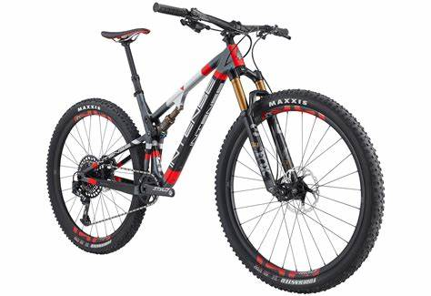

Categorias
Modelos

Specialized
Intense" class="bike-cotainer">
Intense

Specialized

BMC
As bicicletas de cross-country são projetadas para corridas e trilhas de longa distância em terrenos variados, como trilhas de montanha e percursos naturais. Elas têm um design leve e eficiente, com quadros de alumínio ou carbono para otimizar a velocidade e a agilidade. Geralmente possuem suspensão dianteira para absorver os impactos em terrenos irregulares, mas são mais rígidas do que as bicicletas de downhill. Os pneus são mais estreitos e com padrões de banda de rodagem mais baixos para minimizar a resistência ao rolamento. As bicicletas de cross-country são ideais para competições e passeios de longa distância em terrenos diversos, priorizando a eficiência e o desempenho em trilhas rápidas e técnicas.